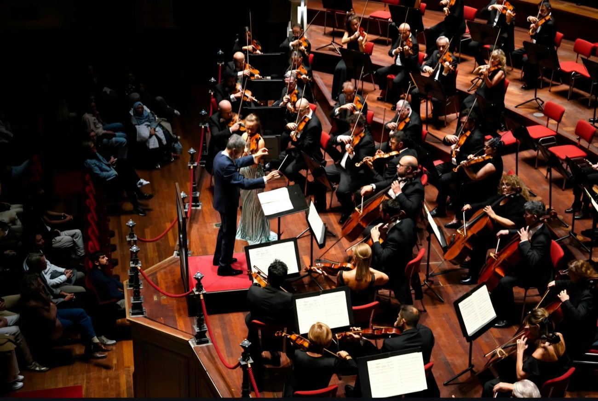
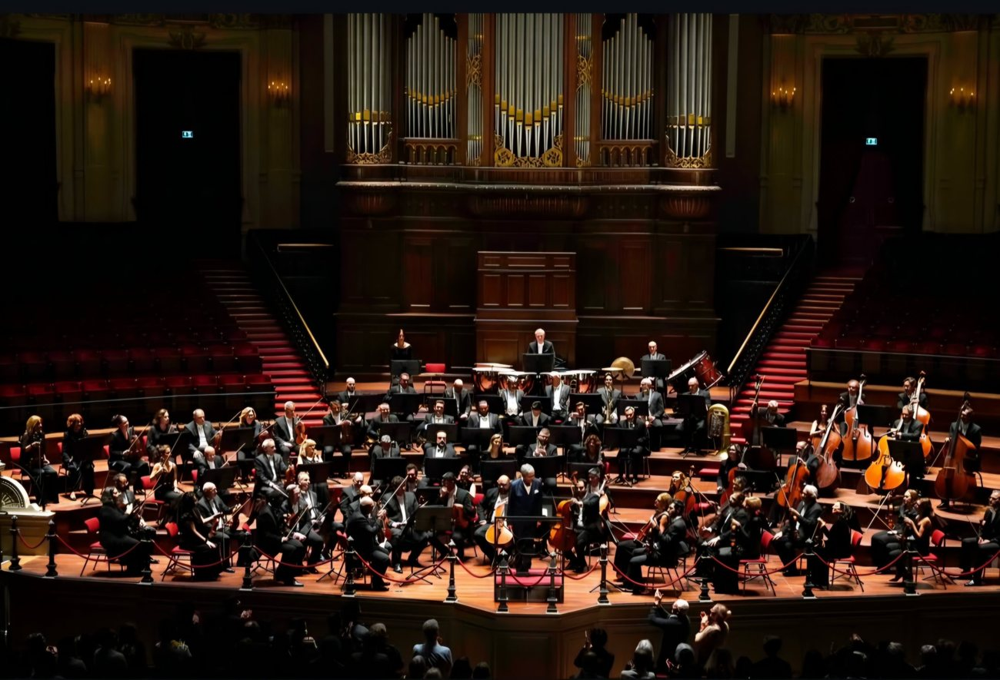

Amsterdam — The Athens State Orchestra, Greece's oldest symphony orchestra, successfully concluded a three-city concert series from October 8 to 11, 2026, spanning Athens, Greece, and Amsterdam and Sas van Gent in the Netherlands. Supported by its collaboration with IMK, an international concert agency and cultural exchange organization, the series gave the orchestra an opportunity to showcase its artistic excellence and strengthen its international presence on prominent European stages.
As one of Greece's leading symphony orchestras, the Athens State Orchestra has long contributed to the development of classical music in its home country and to international cultural exchange. The series was led by conductor Lukas Karytinos, the orchestra's Artistic Director since 2020. Having previously served as Music Director and Artistic Director of the Greek National Opera, Karytinos has built an extensive international career across Europe and beyond, drawing on his close artistic collaboration with the orchestra throughout the tour.

Three cities, one tour
The series began on October 8 with the opening concert of the orchestra's 2026–2027 season at the Megaron Athens Concert Hall. The orchestra then travelled to the Netherlands, performing at the Main Hall of the Royal Concertgebouw in Amsterdam on October 10, followed by a concert at the Industrieel Museum Zeeland in Sas van Gent on October 11. Of particular significance was the Amsterdam performance, which marked the Athens State Orchestra's first appearance at the prestigious Concertgebouw. Renowned worldwide for its exceptional acoustics and distinguished musical heritage, the venue provided a landmark stage for introducing Greece's symphonic tradition to an international audience.

The programme featured Beethoven's Violin Concerto in D major, Op. 61, Saint-Saëns' Cello Concerto No. 1 in A minor, Op. 33, and Shostakovich's Symphony No. 9 in E-flat major, Op. 70. Violinist Alexandra Conunova and cellist Hannah Kim appeared as soloists. Under Karytinos' direction, the orchestra demonstrated its expressive range through works representing contrasting musical periods and styles.
The Amsterdam performance was met with a standing ovation — and an encore of Skalkottas's "Epirotikos," a statement of national identity on an international stage.
On the Concertgebouw debutLocal media particularly praised the orchestra's ensemble playing and Karytinos' refined interpretation of Shostakovich's Ninth. The Amsterdam performance was met with a standing ovation, and the orchestra presented "Epirotikos" from Greek Dances by Greek composer Nikos Skalkottas as an encore, highlighting its national musical heritage and artistic identity.
The three-city series not only demonstrated the artistic achievements of the Athens State Orchestra but also underscored the importance of international concert networks in fostering cross-border musical collaboration. In particular, the orchestra's landmark Concertgebouw appearance, made possible through cooperation with IMK, highlighted the potential for continued cultural exchange within the European classical music community — and opened new possibilities for the expansion of international performance networks.